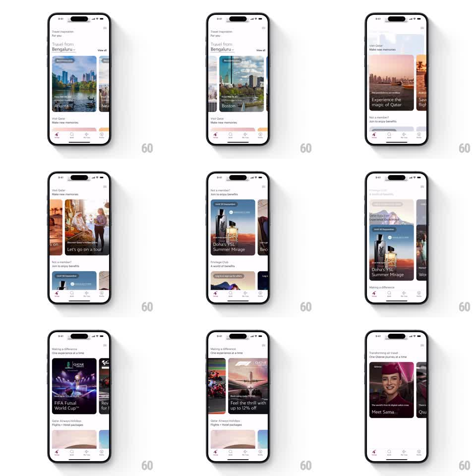

Media
Frame-by-frame

Rebuild this interaction 1:1: Qatar Airways' home feed - a vertical scroll of themed sections, each with its own horizontal card carousel that snaps between full-bleed destination and promo cards.

Rebuild this interaction 1:1: Qatar Airways' home feed - a vertical scroll of themed sections, each with its own horizontal card carousel that snaps between full-bleed destination and promo cards.
## Integration
Integration: stack-agnostic spec - springs given as stiffness/damping, timed motions as duration + curve; map every value to your framework and animation library of choice.
## Scene
White home feed ("Travel inspiration", "Travel from Bengaluru" header with origin switcher). Stacked sections, each a header plus a horizontal carousel of tall photo cards: destination cards ("Atlanta", "Boston" with fare chips), "Visit Qatar! Make new memories", membership prompts ("Not a member? Join to enjoy benefits"), promos ("Doha's YSL Summer Mirage", "Privilege Club", "Making a difference - FIFA Futsal World Cup", "Transforming air travel - Meet Sama"). Bottom tab bar stays fixed.
## Motion spec
Pattern: vertical feed with snapping horizontal carousels.
- Vertical scroll is a normal feed scroll with standard deceleration; sections stack with consistent spacing.
- Each carousel scrolls horizontally with the card peeking from the next item (~24px visible edge); on release it snaps to the nearest card (spring stiffness ~350, damping ~30), centering it with a small scale-up (1.0 from 0.96) as it lands.
- Cards carry a subtle parallax: the photo shifts against the card frame opposite the scroll direction (~8% of drag).
- Carousel scroll and vertical scroll never fight: gesture direction locks within the first ~10px, then owns the axis.
- Section headers stay pinned to their carousel and scroll with the feed.
## Calibration
- One card snap per flick - no multi-card skids.
- The active card's scale/parallax settle must complete within ~300ms of release.
## Reduced motion
Carousels snap without parallax or scale.
## Don't miss
- Cards are image-first with text overlaid on a bottom gradient - the photography owns the card.
- Fare chips and badges ride the card image, pinned to its top edge during parallax.